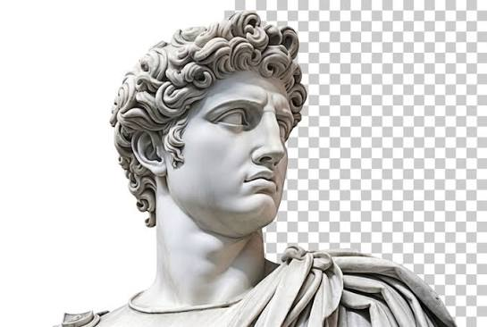

ABOUT ME
저는 이런 사람입니다

오랫동안 수질 분석 장비를 고객에게 소개하고 판매해 왔습니다. 이제 그 경험을 바탕으로 직접 서비스를 만들어 창업하려고 합니다.
수질 분석 장비 영업
20년 동안 수질 분석 장비 영업을 담당해 왔습니다.
바이브 코딩 학습
코딩을 처음부터 배우고 있습니다. AI와 대화하며 직접 만들어 보는 중입니다.
화학물질관리 플랫폼
앞으로 만들 서비스입니다. 화학물질을 관리하는 플랫폼을 준비하고 있습니다.
창업 준비
바이브 코딩을 배우는 이유는 창업입니다.
MY JOURNEY
지금까지, 그리고 앞으로
-
지난 20년
수질 분석 장비 영업
현장에서 고객을 만나며 수질 분석 장비를 소개하고 판매했습니다.
-
지금
바이브 코딩 배우기
첫 번째 프로젝트로 이 소개 페이지를 만들었습니다.
-
목표
화학물질관리 플랫폼 MVP 완성
이 수업을 마치고 MVP를 만드는 것이 목표입니다.
MY GOAL
화학물질관리 플랫폼 MVP
MVP는 꼭 필요한 기능만 담아 처음 만드는 최소 버전의 제품입니다. 이 수업을 통해 첫 버전을 완성하겠습니다.